PYQ / Deep Learning
Deep Learning – Previous Year Questions (PYQ) with Full Solutions
Every question is shown as the original exam image, followed by a worked answer with formulas, calculations, diagrams and graphs. All numerical answers were re-computed in Python (NumPy) and cross-checked.
How to use: View this file on GitHub (maths renders automatically) or open index.html in a browser (or via GitHub Pages) for a nicer reading experience with a sidebar, dark mode and image zoom.
Contents
| Paper | Source images | Questions |
|---|---|---|
| Paper A | PYQ/…130619 … 130959 … 131047 (4 images) |
Q1 – Q5 (conv size, back-prop, dropout, GD variants, gradients, bias-variance, AlexNet, VGG16, vanishing gradient) |
| Paper B | PYQ/…131329 … 131348 … 131429 … 131454 (4 images) |
Q1 – Q5 (CO/BL tagged: perceptron gates, LeNet-5, back-prop MSE, 1×1 / n×n conv, AlexNet conv1) |
| Paper C | PYQ/…131608 … 131656 … 131739 … 131757 (4 images) |
Q1 – Q6 (MP neuron, optimisers, CNN params, RNN/LSTM/GRU, BCE, guided back-prop, regularisation) |
| Quick formula sheet | – | All key formulas on one page |
Paper A – Question set 1 (5 questions)
A-Q1 – Convolution size, params & back-propagation
Original question (image) – click to collapse
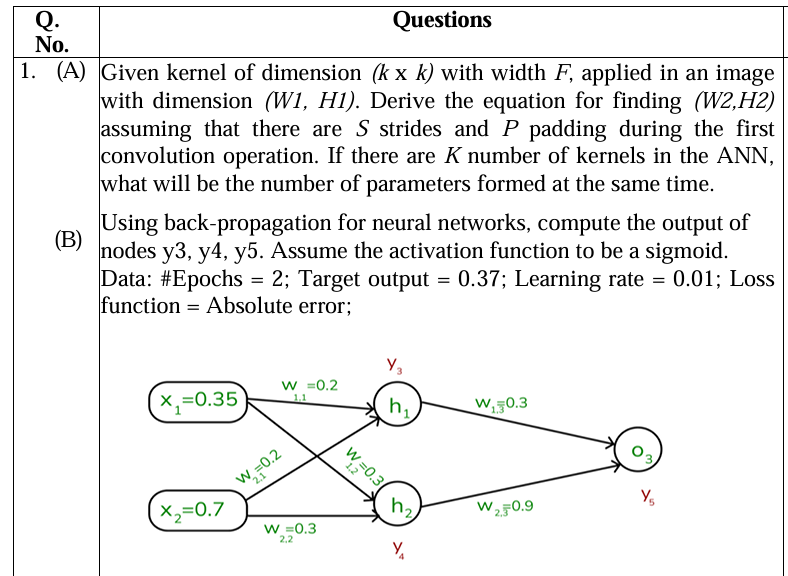
A-Q1 (A) – Output size of a convolution and number of parameters
Given: input \(W_1 \times H_1 \times D\), kernel \(k\times k\) (width \(F=k\)), stride \(S\), padding \(P\), \(K\) kernels.
Derivation. After zero-padding the width becomes \(W_1+2P\). A window of width \(F\) can start at positions \(0, S, 2S, \dots\) and must fit inside the padded width, so the last start position \(s_{max}\cdot S \le W_1+2P-F\). The number of positions is therefore
Number of parameters. One kernel has \(F\cdot F\cdot D\) weights plus 1 bias. With \(K\) kernels:
(weights are shared across all positions, so the count does not depend on \(W_1,H_1\).)
Example: \(227\times227\times3\) input, \(F=11\), \(S=4\), \(P=0\), \(K=96\) → \(W_2=(227-11)/4+1=55\); params \(=96(11\cdot11\cdot3+1)=34{,}944\).
A-Q1 (B) – Back-propagation numerical (sigmoid, absolute error, target 0.37)
Given: \(x_1=0.35,\;x_2=0.7\); \(w_{11}=0.2,\;w_{21}=0.2,\;w_{12}=0.3,\;w_{22}=0.3,\;w_{13}=0.3,\;w_{23}=0.9\); target \(t=0.37\); \(\eta=0.01\); loss \(L=|t-y_5|\); 2 epochs; no bias terms.
Forward pass (epoch 1)
Backward pass. For absolute error \(\dfrac{\partial L}{\partial y_5}=\operatorname{sign}(y_5-t)=+1\) (since \(y_5>t\)). Using \(\sigma'=y(1-y)\):
Gradients \(\partial L/\partial w=\delta\cdot(\text{input to that weight})\) and update \(w\leftarrow w-\eta\,\partial L/\partial w\):
| Weight | Gradient (epoch 1) | New value after epoch 1 | Gradient (epoch 2) | New value after epoch 2 |
|---|---|---|---|---|
| \(w_{13}\) (\(\delta_5y_3\)) | 0.123027 | 0.298770 | 0.123082 | 0.297539 |
| \(w_{23}\) (\(\delta_5y_4\)) | 0.128773 | 0.898712 | 0.128821 | 0.897424 |
| \(w_{11}\) (\(\delta_3x_1\)) | 0.005783 | 0.199942 | 0.005762 | 0.199885 |
| \(w_{21}\) (\(\delta_3x_2\)) | 0.011566 | 0.199884 | 0.011525 | 0.199769 |
| \(w_{12}\) (\(\delta_4x_1\)) | 0.017114 | 0.299829 | 0.017098 | 0.299658 |
| \(w_{22}\) (\(\delta_4x_2\)) | 0.034227 | 0.299658 | 0.034197 | 0.299316 |
Results
| \(y_3\) | \(y_4\) | \(y_5\) | Loss \(\lvert t-y_5\rvert\) | |
|---|---|---|---|---|
| Epoch 1 (forward, initial weights) | 0.55231 | 0.57811 | 0.66507 | 0.29507 |
| Epoch 2 (forward, after 1 update) | 0.55228 | 0.57803 | 0.66474 | 0.29474 |
| After 2 epochs (final) | 0.55226 | 0.57796 | 0.66441 | 0.29441 |
So after two epochs the outputs are \(y_3\approx0.5523,\;y_4\approx0.5780,\;y_5\approx0.6644\). With \(\eta=0.01\) the network barely moves toward the target 0.37 (it is still far away), because the learning rate is tiny and the sigmoid slope is small.
A-Q2 – Dropout algorithm & GD variants
Original question (image) – click to collapse
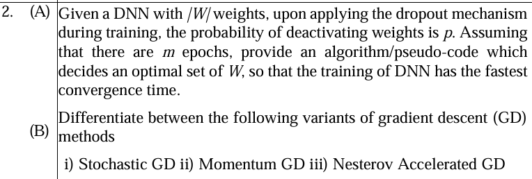
A-Q2 (A) – Dropout algorithm for fastest convergence
Let \(|W|\) be the number of weights, \(p\) the probability a weight is deactivated, so each weight is kept with probability \(q=1-p\), and \(m\) epochs are available.
Idea. In every mini-batch a random sub-network of \(\approx q|W|\) weights is trained (different each time → acts like an ensemble). The "optimal" \(W\) is the one with the best validation loss; the dropout rate \(p\) itself is tuned so the validation loss reaches its target in the fewest epochs. Weights are rescaled by \(1/q\) ("inverted dropout") so no change is needed at test time.
ALGORITHM Dropout-Training(W, m, candidate set P = {0.1, 0.2, 0.3, 0.4, 0.5})
best_p <- None ; best_epochs <- infinity ; W_best <- None
FOR each p in P: # tune dropout probability
q <- 1 - p
initialise W (He / Xavier) ; eta <- initial learning rate
FOR epoch = 1 .. m:
FOR each mini-batch (X, Y):
M <- Bernoulli(q) mask, one bit per weight # 1 = keep, 0 = drop
W~ <- (M ⊙ W) / q # inverted dropout
Y^ <- forward(X ; W~)
g <- backprop( loss(Y^, Y) ) w.r.t. W~
W <- W - eta * (M ⊙ g) # only active weights learn
val_loss <- evaluate(valid_set ; W) # NO mask at evaluation
IF val_loss improved: save W_p* <- W ; wait <- 0
ELSE: wait <- wait + 1
IF val_loss <= target OR wait >= patience: BREAK # early stop = fastest convergence
IF epochs_used < best_epochs AND val_loss(W_p*) is lowest so far:
best_p <- p ; best_epochs <- epochs_used ; W_best <- W_p*
RETURN W_best, best_p
Why it converges quickly / what is optimised
- Expected number of updated weights per step \(=(1-p)|W|\) → cheaper steps; a very large \(p\) makes gradients too noisy and slows convergence, a very small \(p\) gives no regularisation (over-fitting) – hence the search over \(p\).
- Co-adaptation between weights is broken, so the generalisation gap shrinks and early stopping triggers sooner.
- Output of the retained network at test time: \(\hat y=f(x;W)\) (full weights, since training used the \(1/q\) scaling).
A-Q2 (B) – Stochastic GD vs Momentum GD vs Nesterov Accelerated GD
| Stochastic GD (SGD) | Momentum GD | Nesterov Accelerated GD (NAG) | |
|---|---|---|---|
| Update | \(w_{t+1}=w_t-\eta\,\nabla L_i(w_t)\) | \(v_t=\gamma v_{t-1}+\eta\nabla L(w_t)\) \(w_{t+1}=w_t-v_t\) |
\(v_t=\gamma v_{t-1}+\eta\nabla L(\,w_t-\gamma v_{t-1})\) \(w_{t+1}=w_t-v_t\) |
| Gradient evaluated at | current point, one sample (or mini-batch) | current point (full history kept in \(v_t\)) | look-ahead point \(w_t-\gamma v_{t-1}\) |
| Memory of past gradients | none | exponentially weighted sum of past gradients | same, but corrected |
| Behaviour | noisy, zig-zags across narrow valleys, slow | accelerates along consistent direction, damps zig-zag, but can overshoot the minimum | anticipates the next position, so it slows down before the minimum – less overshoot, faster convergence |
| Extra hyper-parameter | – | \(\gamma\approx0.9\) | \(\gamma\approx0.9\) |
| Typical convergence rate (convex) | \(O(1/\sqrt t)\) | – | \(O(1/t^{2})\) |
Intuition: Momentum = "ball rolling downhill" (first compute gradient, then take a big jump). NAG = "ball that looks ahead": first make the momentum jump, then compute the gradient there and correct.
A-Q3 – Gradient chain rule & bias-variance
Original question (image) – click to collapse
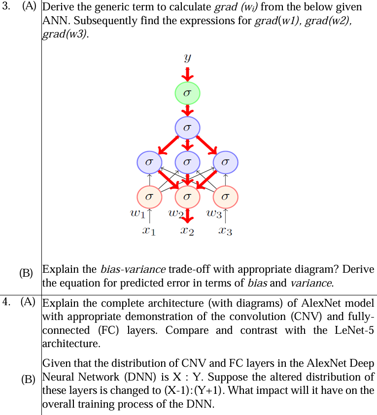
A-Q3 (A) – Generic term of \(\operatorname{grad}(w_i)\)
Reading the figure: input \(x_i\) is multiplied by \(w_i\) and goes into a sigmoid unit of layer 1, which feeds (fully connected) 3 sigmoid units of layer 2, then one unit in layer 3, then the output unit that produces \(y\).
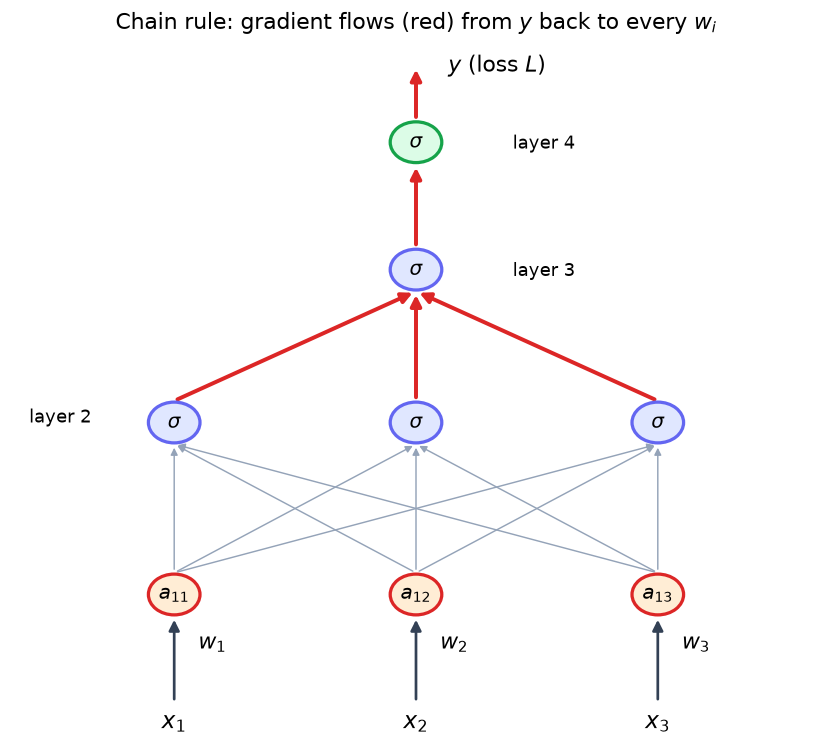
Define (σ = sigmoid):
By the chain rule, the gradient of \(w_i\) is the product of all local derivatives along every path from \(L\) to \(w_i\) (red arrows – three paths, one through each middle unit \(j\)):
Writing \(\delta_4=\dfrac{\partial L}{\partial y}y(1-y)\), \(\delta_3=\delta_4\,c\,a_3(1-a_3)\), \(\delta_{2j}=\delta_3\,u_j\,a_{2j}(1-a_{2j})\), \(\delta_{1i}=a_{1i}(1-a_{1i})\sum_j\delta_{2j}v_{ji}\):
Specific expressions (set \(i=1,2,3\), the same shared factor \(S=\dfrac{\partial L}{\partial y}y(1-y)\,c\,a_3(1-a_3)\)):
Note every term contains the factor \(\sigma'\le0.25\) once per layer → the product shrinks with depth (vanishing gradient, see A-Q5 (B)).
A-Q3 (B) – Bias–variance trade-off and the error equation
- Bias – error from wrong/too simple assumptions (under-fitting). High bias: model misses the real pattern; training and test error both high.
- Variance – sensitivity to the particular training set (over-fitting). High variance: tiny training error, big test error.
- Increasing model complexity decreases bias but increases variance → the test error is U-shaped; the sweet spot minimises their sum.
Derivation. Let \(Y=f(x)+\varepsilon\) with \(E[\varepsilon]=0\), \(\operatorname{Var}(\varepsilon)=\sigma^2\), and let \(\hat f(x)\) be the model learnt from a random training set. At a point \(x\):
(noise is independent of \(\hat f\), and \(E[\varepsilon]=0\)), so \(\mathrm{Err}=E[(f-\hat f)^2]+\sigma^2\). Add and subtract \(E[\hat f]\):
| Low variance | High variance | |
|---|---|---|
| Low bias | ideal | over-fit |
| High bias | under-fit | worst case |
A-Q4 – AlexNet vs LeNet-5 & CNV:FC ratio
A-Q4 (A) – AlexNet architecture, and comparison with LeNet-5
AlexNet (Krizhevsky et al., 2012). Input \(227\times227\times3\) (the paper says 224, 227 makes the arithmetic exact), 5 CONV (CNV) layers + 3 FC layers, 1000-way softmax.
| Layer | Type | Filters / neurons | Kernel, stride, pad | Output | Parameters |
|---|---|---|---|---|---|
| Input | – | – | – | 227×227×3 | 0 |
| CONV1 | conv + ReLU (+LRN) | 96 | 11×11, S=4, P=0 | 55×55×96 | (11·11·3+1)·96 = 34,944 |
| POOL1 | max pool | – | 3×3, S=2 | 27×27×96 | 0 |
| CONV2 | conv + ReLU (+LRN) | 256 | 5×5, S=1, P=2 | 27×27×256 | (5·5·48+1)·256 = 307,456 (two GPU groups → depth 48) |
| POOL2 | max pool | – | 3×3, S=2 | 13×13×256 | 0 |
| CONV3 | conv + ReLU | 384 | 3×3, S=1, P=1 | 13×13×384 | (3·3·256+1)·384 = 885,120 |
| CONV4 | conv + ReLU | 384 | 3×3, S=1, P=1 | 13×13×384 | (3·3·192+1)·384 = 663,936 |
| CONV5 | conv + ReLU | 256 | 3×3, S=1, P=1 | 13×13×256 | (3·3·192+1)·256 = 442,624 |
| POOL3 | max pool | – | 3×3, S=2 | 6×6×256 | 0 |
| FC6 | fully connected + ReLU + dropout 0.5 | 4096 | flatten 9216 | 4096 | 9216·4096+4096 = 37,752,832 |
| FC7 | fully connected + ReLU + dropout 0.5 | 4096 | – | 4096 | 4096·4096+4096 = 16,781,312 |
| FC8 | fully connected + softmax | 1000 | – | 1000 | 4096·1000+1000 = 4,097,000 |
| Total | ≈ 60.97 M (conv = 2.33 M, FC = 58.63 M) |
Size formula used for each CNV layer: \(W_2=\frac{W_1-F+2P}{S}+1\); e.g. CONV1: \((227-11)/4+1=55\); POOL1: \((55-3)/2+1=27\); POOL3: \((13-3)/2+1=6\).
LeNet-5 (LeCun, 1998)
Compare / contrast
| Feature | LeNet-5 (1998) | AlexNet (2012) |
|---|---|---|
| Input | 32×32×1 (grey) | 227×227×3 (RGB) |
| Task | digit recognition (10 classes) | ImageNet (1000 classes) |
| Depth | 2 CONV + 2 pool + 3 FC = 5 weight layers (C1,C3,C5,F6,OUT) | 5 CONV + 3 pool + 3 FC = 8 weight layers |
| Parameters | ≈ 61 K | ≈ 61 M (1000× more) |
| Activation | tanh / sigmoid | ReLU (6× faster training, no saturation) |
| Pooling | average (subsampling), non-overlapping 2×2 | max, overlapping 3×3 / stride 2 |
| Regularisation | none | dropout (0.5), data augmentation, LRN |
| Hardware | CPU | 2 GPUs (model split) |
| Common | alternating CONV → pool, then FC classifier, trained by back-prop |
A-Q4 (B) – Changing the CNV : FC ratio from \(X:Y\) to \((X-1):(Y+1)\)
In AlexNet \(X:Y=5:3\). The new design is \(4:4\) – one conv layer removed, one FC layer added (e.g. an extra 4096→4096 FC).
| Quantity | Effect |
|---|---|
| Parameters | FC layers hold ≈ 96 % of AlexNet's weights. Extra FC adds ≈ 4096·4096 ≈ +16.8 M (+27 %); removing e.g. CONV3 saves only ≈ 0.9 M. Net: model becomes much larger. |
| Compute (FLOPs) | Conv layers hold ≈ 92 % of the multiply-adds (≈ 666 M of ≈ 724 M); removing CONV3 saves ≈ 150 M MACs (≈ 21 %), the FC adds only ≈ 17 M. Per-epoch compute drops, but memory and weight-update traffic rise. |
| Feature quality | One fewer conv layer = shallower hierarchy / smaller receptive field → weaker, less abstract spatial features → lower accuracy on images. |
| Over-fitting | More dense weights with no weight-sharing → much higher over-fitting risk; needs more dropout / more data. |
| Convergence | FC layers are fully dense (no weight sharing) and one more sigmoid/ReLU layer in the chain lengthens the gradient path; the classifier has to learn from poorer features, so more epochs are typically needed to reach the same accuracy. |
Impact on overall training: faster per-iteration compute but larger memory footprint, poorer generalisation, higher risk of over-fitting and typically slower/less stable convergence to the same accuracy – so the change is generally detrimental; moving the ratio in the opposite direction (\((X+1):(Y-1)\), as in VGG/ResNet which use few FC layers) is the beneficial trend.
A-Q5 – VGG16 & vanishing gradient
Original question (image) – click to collapse
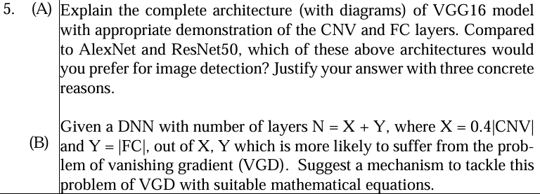
A-Q5 (A) – VGG16 architecture and choice for image detection
VGG16 (Simonyan & Zisserman, 2014) uses only 3×3 conv (stride 1, pad 1) and 2×2 max-pool (stride 2); 13 CNV + 3 FC = 16 weight layers. Two stacked 3×3 convs see a 5×5 area but use \(2\cdot9C^2=18C^2\) weights vs \(25C^2\) for one 5×5 (and add more non-linearity).
| Block | Layers | Output | Params |
|---|---|---|---|
| Input | – | 224×224×3 | 0 |
| Block 1 | CONV3-64 ×2, POOL | 224×224×64 → 112×112×64 | 1,792 + 36,928 |
| Block 2 | CONV3-128 ×2, POOL | 112×112×128 → 56×56×128 | 73,856 + 147,584 |
| Block 3 | CONV3-256 ×3, POOL | 56×56×256 → 28×28×256 | 295,168 + 590,080 + 590,080 |
| Block 4 | CONV3-512 ×3, POOL | 28×28×512 → 14×14×512 | 1,180,160 + 2,359,808 + 2,359,808 |
| Block 5 | CONV3-512 ×3, POOL | 14×14×512 → 7×7×512 | 2,359,808 ×3 |
| FC1 | 25088 → 4096 | 4096 | 102,764,544 |
| FC2 | 4096 → 4096 | 4096 | 16,781,312 |
| FC3 | 4096 → 1000 + softmax | 1000 | 4,097,000 |
| Total | 138,357,544 (conv 14.71 M, FC 123.64 M) |
Which is preferable for image detection – AlexNet, VGG16 or ResNet50? → ResNet50. Three concrete reasons:
- Better optimisation / depth through skip connections. \(y=F(x)+x\) gives a gradient path of \(1+\partial F/\partial x\), so very deep (50 layers) networks train without vanishing gradients, whereas VGG16 and AlexNet have no shortcuts. Higher accuracy: ImageNet top-1 ≈ 76 % (ResNet50) vs ≈ 72 % (VGG16) vs ≈ 57 % (AlexNet).
- Far fewer parameters and compute. ResNet50 ≈ 25.6 M params and ≈ 4 GMACs vs VGG16 ≈ 138 M and ≈ 15.5 GMACs; it ends with global average pooling instead of huge FC layers, so it is fully convolutional (works on any input size – needed in detection) and is cheaper to train / run.
- Multi-scale, localisation-friendly features. ResNet's stages (C2–C5 at strides 4–32) feed detector heads such as Faster R-CNN/FPN/Mask R-CNN, and FC layers (used in VGG/AlexNet) throw away spatial layout that detection needs. ResNet backbones are the de-facto standard for detectors.
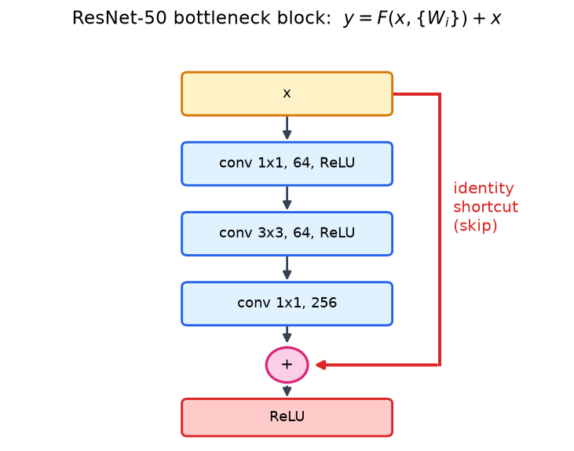
A-Q5 (B) – Which of \(X=0.4\lvert CNV\rvert\), \(Y=\lvert FC\rvert\) suffers more from vanishing gradient? Remedy
In a CNN the CNV block comes first (near the input) and the FC block last (near the loss). Back-propagated gradients reach the FC layers first and only reach the CNV layers after passing through all FC layers, so the quantity far from the output – X (the convolutional layers) – is more likely to suffer from VGD. (The deeper the net, i.e. the larger \(N=X+Y\), the worse it gets, and the earliest layers receive the smallest updates.)
Why (mathematics). For layer \(l\) with pre-activation \(z^{l}=W^{l}a^{l-1}\) and \(a^l=\sigma(z^l)\):
For sigmoid \(\sigma'(z)=\sigma(1-\sigma)\le\tfrac14\), so with \(\lVert W\rVert\lesssim1\) the product behaves like \((0.25)^{N}\) → 0.
Mechanisms to tackle it
- ReLU-family activations \(f(z)=\max(0,z)\), \(f'(z)=1\) for \(z>0\) → no shrinking factor: \(\prod f'\!=1\) along active paths.
- Residual (skip) connections \(a^{l+1}=a^{l}+F(a^{l})\):
the "1" guarantees a gradient highway. 3. Batch normalisation – keeps \(z\) inside the sensitive region: \(\hat z=\dfrac{z-\mu_B}{\sqrt{\sigma_B^2+\epsilon}}\), \(y=\gamma\hat z+\beta\). 4. Proper initialisation – He: \(\operatorname{Var}(w)=2/n_{in}\) (Xavier: \(2/(n_{in}+n_{out})\)) keeps the variance of activations and gradients ≈ constant across layers. 5. Others: gradient clipping (for the opposite problem, exploding), auxiliary classifiers (GoogLeNet), shorter paths/dense connections.
Paper B – Question set 2 (CO/BL tagged)
B-Q1 – Perceptron gates & LeNet-5
Original question (image) – click to collapse
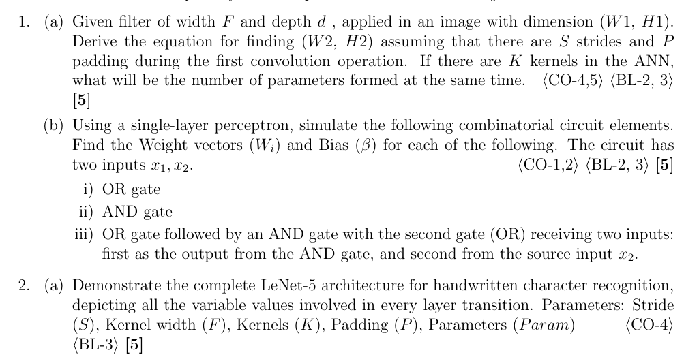
B-Q1 (a) – Output size and parameters (filter width \(F\), depth \(d\))
Same as A-Q1 (A):
(weights: \(F\cdot F\cdot d\) per filter, +1 bias per filter, shared over all positions.)
B-Q1 (b) – Single-layer perceptron for logic gates
Perceptron: \(y=\begin{cases}1 & w_1x_1+w_2x_2+\beta\ge0\\0&\text{otherwise}\end{cases}\)
| Gate | Weights \(W=(w_1,w_2)\) | Bias \(\beta\) | Check |
|---|---|---|---|
| i) OR | (1, 1) | −0.5 | (0,0)→−0.5→0; (0,1)→0.5→1; (1,0)→1; (1,1)→1.5→1 ✓ |
| ii) AND | (1, 1) | −1.5 | (0,0)→0; (0,1)→−0.5→0; (1,0)→0; (1,1)→0.5→1 ✓ |
iii) Composite circuit. The text defines an AND gate on \((x_1,x_2)\) followed by an OR gate whose two inputs are the AND output \(a\) and the source input \(x_2\): \(y=\mathrm{OR}(\mathrm{AND}(x_1,x_2),x_2)\).
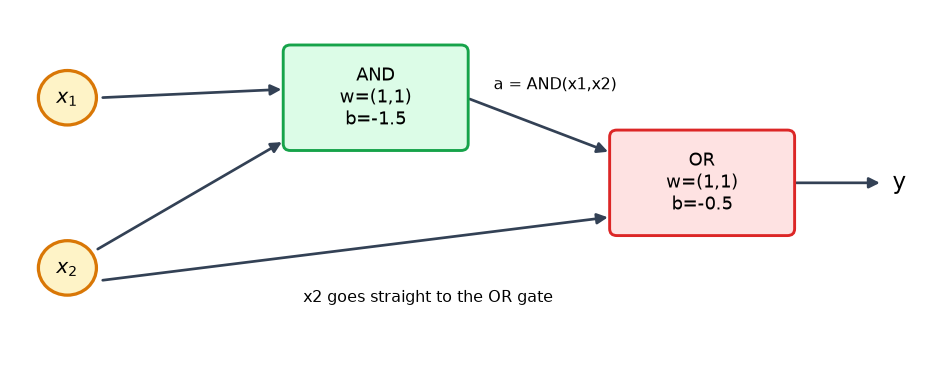
- AND unit: \(W=(1,1)\), \(\beta=-1.5\) → \(a=x_1\wedge x_2\).
- OR unit (inputs \(a,x_2\)): \(W=(1,1)\), \(\beta=-0.5\) → \(y=a\vee x_2\).
| \(x_1\) | \(x_2\) | \(a=x_1\wedge x_2\) | \(y=a\vee x_2\) |
|---|---|---|---|
| 0 | 0 | 0 | 0 |
| 0 | 1 | 0 | 1 |
| 1 | 0 | 0 | 0 |
| 1 | 1 | 1 | 1 |
The truth table shows \(y=x_2\) (absorption law: \(x_1x_2+x_2=x_2\)). The other reading ("OR first, then AND with \(x_2\)") is \((x_1\vee x_2)\wedge x_2=x_2\) as well. So the whole circuit is also realised by one perceptron with \(W=(0,\,1)\), \(\beta=-0.5\).
B-Q2 – LeNet-5 architecture
B-Q2 (a) – LeNet-5 with every layer transition
Formula per layer: \(W_2=\frac{W_1-F+2P}{S}+1\), conv params \(=K(F^2D+1)\).
| Layer | Input | \(F\) | \(S\) | \(P\) | \(K\) | Output | Param |
|---|---|---|---|---|---|---|---|
| INPUT | 32×32×1 | – | – | – | – | 32×32×1 | 0 |
| C1 (conv) | 32×32×1 | 5 | 1 | 0 | 6 | \((32-5)/1+1=\) 28×28×6 | \((5\cdot5\cdot1+1)\cdot6=156\) |
| S2 (avg pool) | 28×28×6 | 2 | 2 | 0 | 6 | \((28-2)/2+1=\) 14×14×6 | 0 (12 in the original: 1 coeff + 1 bias per map) |
| C3 (conv) | 14×14×6 | 5 | 1 | 0 | 16 | \((14-5)+1=\) 10×10×16 | \((5\cdot5\cdot6+1)\cdot16=2{,}416\) (1,516 with the original sparse connection table) |
| S4 (avg pool) | 10×10×16 | 2 | 2 | 0 | 16 | 5×5×16 | 0 |
| C5 (conv = FC) | 5×5×16 | 5 | 1 | 0 | 120 | \((5-5)+1=\) 1×1×120 | \((5\cdot5\cdot16+1)\cdot120=48{,}120\) |
| F6 (FC) | 120 | – | – | – | 84 | 84 | \((120+1)\cdot84=10{,}164\) |
| OUTPUT (FC) | 84 | – | – | – | 10 | 10 | \((84+1)\cdot10=850\) |
| Total | 61,706 |
Activation: tanh/sigmoid (classic), output RBF/softmax. Flow: \(32\times32\to28\times28\to14\times14\to10\times10\to5\times5\to1\times1\to84\to10\).
B-Q2 (b) – Back-propagation (sigmoid, MSE)
Original question (image) – click to collapse
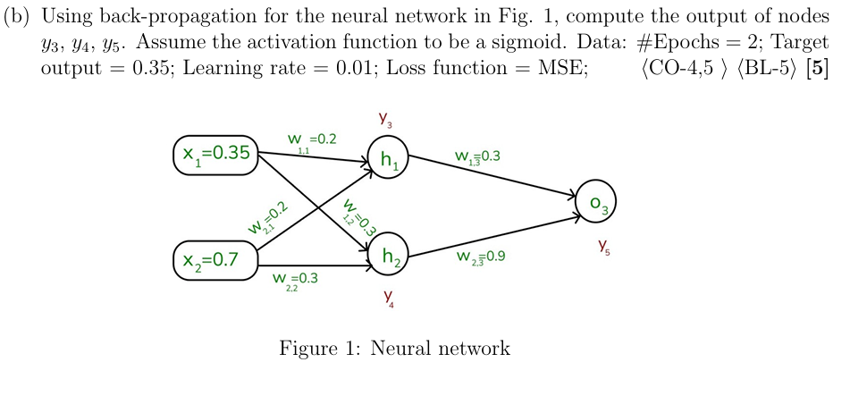
B-Q2 (b) – Back-propagation (sigmoid, MSE, target 0.35)
Same network and initial weights as A-Q1 (B) (Figure 1), now with target \(t=0.35\) and \(L=\tfrac12(t-y_5)^2\) (if the convention \(L=(t-y_5)^2\) is used, every gradient below is simply doubled).
Forward pass (epoch 1) – identical to A-Q1 (B): \(y_3=0.55231,\;y_4=0.57811,\;y_5=0.66507\).
Backward pass
| Weight | Gradient (epoch 1) | After epoch 1 | Gradient (epoch 2) | After epoch 2 |
|---|---|---|---|---|
| \(w_{13}\) | 0.038763 | 0.299612 | 0.038755 | 0.299225 |
| \(w_{23}\) | 0.040573 | 0.899594 | 0.040564 | 0.899189 |
| \(w_{11}\) | 0.001822 | 0.199982 | 0.001819 | 0.199964 |
| \(w_{21}\) | 0.003644 | 0.199964 | 0.003639 | 0.199927 |
| \(w_{12}\) | 0.005392 | 0.299946 | 0.005389 | 0.299892 |
| \(w_{22}\) | 0.010784 | 0.299892 | 0.010777 | 0.299784 |
| \(y_3\) | \(y_4\) | \(y_5\) | Loss | |
|---|---|---|---|---|
| Epoch 1 forward | 0.55231 | 0.57811 | 0.66507 | 0.04964 |
| Epoch 2 forward | 0.55230 | 0.57808 | 0.66497 | 0.04960 |
| After 2 epochs | 0.55229 | 0.57806 | 0.66486 | 0.04957 |
The graph (run for many epochs with \(\eta=0.01\)) shows that the output creeps toward the target very slowly – two epochs hardly change it.
B-Q3 – Bias-variance & 1x1 / nxn filters
Original question (image) – click to collapse
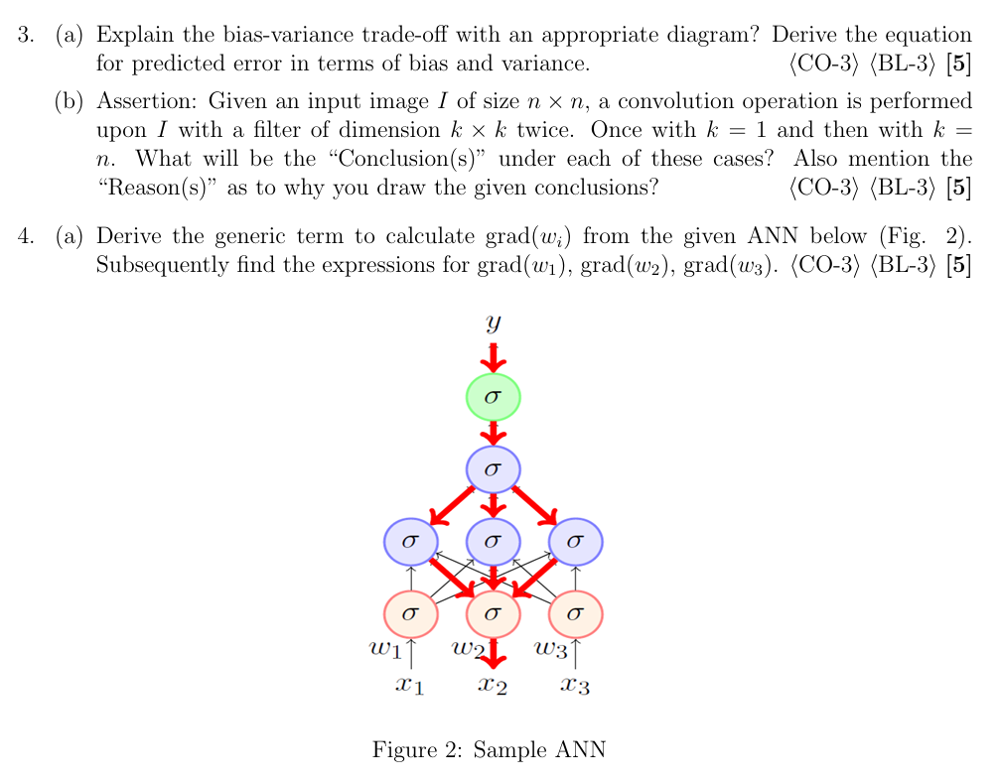
B-Q3 (a) – Bias–variance trade-off and error equation
Identical to A-Q3 (B) above:
B-Q3 (b) – Conv filter \(k=1\) vs \(k=n\) on an \(n\times n\) image
Output size \(=\dfrac{n-k+2P}{S}+1\) with \(P=0,\;S=1\).
| Case 1: \(k=1\) | Case 2: \(k=n\) | |
|---|---|---|
| Output size | \(\frac{n-1}{1}+1=n\) → \(n\times n\) | \(\frac{n-n}{1}+1=1\) → \(1\times1\) |
| Parameters | 1 weight + 1 bias per filter (×depth) | \(n^2\) weights + 1 bias |
| Operation | each output pixel \(=w\cdot I(i,j)+b\) | one output \(=\sum_{i,j}w_{ij}I_{ij}+b\) (a dot product over the whole image) |
| Receptive field | single pixel | whole image |
Conclusions and reasons
- \(k=1\): the output is just a scaled/shifted copy of the input (identical spatial resolution). Conclusion: no spatial/neighbourhood feature (edges, textures) can be extracted – it only does a point-wise transform. With multi-channel input it mixes channels (1×1 convolution, used for dimensionality reduction/bottlenecks in Inception/ResNet and for adding non-linearity cheaply). Reason: the window never looks at neighbours.
- \(k=n\): the output collapses to a single scalar (global feature). Conclusion: it behaves exactly like a fully-connected neuron – global information is captured, but all spatial structure is lost, there is no weight sharing or translation equivariance and the parameter count is huge (\(n^2\) per filter). Reason: the one window covers the entire image, so only one position is possible.
- Practical filters (3×3, 5×5) sit between these extremes: local receptive field + weight sharing + few parameters.
B-Q4 – Gradient formula & redundant layers
B-Q4 (a) – Generic \(\operatorname{grad}(w_i)\)
Identical to A-Q3 (A).
Original question (image) – click to collapse
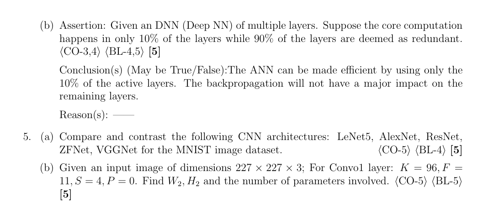
B-Q4 (b) – Assertion: 10 % layers do the work, 90 % are redundant
Conclusion(s): "The ANN can be made efficient by using only the 10 % active layers" – partly True (after pruning/retraining); "back-propagation will not have a major impact on the remaining layers" – False. Overall the assertion as written is False.
Reasons
- A network is a composition \(f=f_N\circ\dots\circ f_1\); layers are sequentially dependent. Simply deleting 90 % of layers breaks the chain (dimension mismatch, lost hierarchy of features) and accuracy collapses unless the model is re-designed/retrained – by pruning, distillation to a smaller student, early-exit networks, or lottery-ticket sub-networks. This is why efficiency can indeed be obtained with these techniques (e.g. in ResNets, removing single blocks changes accuracy only slightly because of skip connections).
- Back-propagation passes through every layer: \(\dfrac{\partial L}{\partial W^{l}}=\delta^{l}(a^{l-1})^{T}\) with \(\delta^{l}=(W^{l+1})^{T}\delta^{l+1}\odot\sigma'(z^l)\). A layer deemed "redundant" still multiplies the gradient by \(W\,\sigma'\) – it can attenuate (vanishing) or amplify (exploding) the gradient reaching the "core" layers, and it still costs memory, compute and weight updates. So back-prop certainly has an impact on the remaining layers.
- Redundant layers can also add over-fitting and training time; therefore redundancy is removed deliberately (pruning, quantisation, compression) rather than ignored.
B-Q5 – CNN comparison on MNIST & AlexNet conv1
B-Q5 (a) – LeNet-5, AlexNet, ResNet, ZFNet, VGGNet on MNIST
MNIST: 70 000 grey-scale \(28\times28\times1\) images, 10 classes (60 k train / 10 k test).
| Model | Year | Depth | Params | Key idea | Suitability for MNIST |
|---|---|---|---|---|---|
| LeNet-5 | 1998 | 7 (5 weight) | ≈ 61 K | CONV–pool–FC, avg pooling, tanh | Designed for it; input padded to 32×32; ≈ 99 % accuracy, very fast, tiny memory – best fit |
| AlexNet | 2012 | 8 | ≈ 61 M | ReLU, dropout, overlapping max-pool, GPU | Image must be resized to 227×227×3 and replicated to RGB; massively over-parameterised for 28×28 digits → slow, over-fits, no real gain (~99.3 %) |
| ZFNet | 2013 | 8 | ≈ 60 M | AlexNet with smaller first filter (7×7, S=2) + deconvnet visualisation | Same issues as AlexNet; useful to visualise what filters learn |
| VGGNet (16/19) | 2014 | 16/19 | 138 M / 144 M | Only 3×3 convs, deep & uniform | Heavy: 5 poolings need ≥32×32 inputs; huge FC layers; overkill, can reach ≈ 99.5 % with resizing |
| ResNet (18/34/50) | 2015 | 18–152 | 11 M–60 M (R50: 25.6 M) | Skip connections \(y=F(x)+x\), BN | Works well (small ResNets ≈ 99.6 %), trains deep nets stably, but more compute than needed for MNIST |
Conclusion: for MNIST the simple, small LeNet-5 gives essentially the same accuracy at a tiny fraction of the cost; deeper nets (ResNet) can give marginal gains with tuning, while AlexNet/ZFNet/VGG are over-sized.
B-Q5 (b) – Conv1 of AlexNet
Input \(227\times227\times3\), \(K=96\), \(F=11\), \(S=4\), \(P=0\):
Output volume \(55\times55\times96\).
(34,848 weights + 96 biases.)
Paper C – Question set 3 (marks tagged)
C-Q1 – Squared loss, MP neuron, Adagrad/RMSProp
Original question (image) – click to collapse
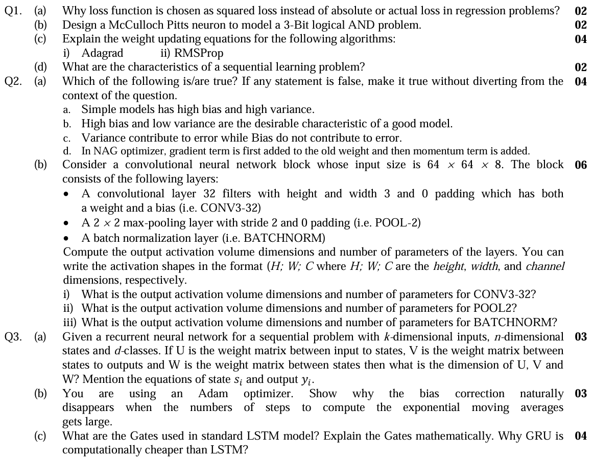
C-Q1 (a) – Why squared loss instead of absolute (or 0-1 "actual") loss in regression? [2]
| Property | Squared loss \((y-\hat y)^2\) | Absolute loss \(\lvert y-\hat y\rvert\) | 0-1 / "actual" loss |
|---|---|---|---|
| Differentiable everywhere | Yes | No (kink at 0) | No (step) |
| Gradient | \(-2(y-\hat y)\) – proportional to the error: big steps when far, automatically small steps near the minimum | constant \(\pm1\) – does not shrink, oscillates around the optimum | zero almost everywhere – no learning signal |
| Convex, smooth, unique minimum for linear models | Yes | Convex but not smooth | No |
| Statistical meaning | Maximum-likelihood under Gaussian noise | MLE under Laplace noise | – |
| Closed form | Normal equations \(w=(X^TX)^{-1}X^Ty\) | none | none |
So squared loss gives smooth, well-behaved gradients (and penalises large errors more). Its drawback is sensitivity to outliers.
C-Q1 (b) – McCulloch–Pitts neuron for 3-bit AND [2]
MP neuron: inputs are binary, all excitatory weights \(=+1\), output \(y=1\) iff \(\sum x_i\ge\theta\).
| \(x_1x_2x_3\) | 000 | 001 | 010 | 011 | 100 | 101 | 110 | 111 |
|---|---|---|---|---|---|---|---|---|
| \(\sum\) | 0 | 1 | 1 | 2 | 1 | 2 | 2 | 3 |
| \(y\) | 0 | 0 | 0 | 0 | 0 | 0 | 0 | 1 |
C-Q1 (c) – Weight-update equations [4]
Let \(g_t=\nabla_wL(w_t)\), learning rate \(\eta\), small \(\epsilon\) (≈1e-8).
i) Adagrad (per-parameter learning rate that shrinks with the accumulated squared gradient)
- frequently-updated weights get small steps; rare features get large steps (good for sparse data);
- drawback: \(G_t\) only grows, so the learning rate decays to zero and learning stops early.
ii) RMSProp (exponential moving average instead of the full sum)
- forgets old gradients, so the learning rate does not vanish; fixes Adagrad's decay problem.
C-Q1 (d) – Characteristics of a sequential learning problem [2]
- Order matters – the data are ordered (time, text, speech, DNA); shuffling within a sequence destroys the information.
- Temporal / long-range dependence – the output at step \(t\) depends on current and past inputs (memory/state is required).
- Variable-length inputs and/or outputs (padding / masking needed).
- Parameter sharing across time – the same function (weights \(U,V,W\)) is applied at every step.
- Samples are not i.i.d. (neighbouring elements are correlated); training uses back-propagation through time.
- Input/output may be sequences in different modes: one-to-many, many-to-one, many-to-many.
C-Q2 – Bias-variance true/false & CNN block
C-Q2 (a) – True/False with corrections [4]
| # | Statement | Verdict | Corrected (true) statement |
|---|---|---|---|
| a | Simple models have high bias and high variance. | False | Simple models have high bias and low variance (they under-fit). |
| b | High bias and low variance are the desirable characteristics of a good model. | False | A good model has low bias and low variance. |
| c | Variance contributes to error while bias does not. | False | Both contribute: \(\mathrm{Err}=\mathrm{Bias}^2+\mathrm{Variance}+\sigma^2\). |
| d | In NAG, the gradient term is first added to the old weight and then the momentum term is added. | False | In NAG the momentum step is applied first (look-ahead \(w-\gamma v_{t-1}\)), the gradient is then computed at that look-ahead point and the correction is added: \(v_t=\gamma v_{t-1}+\eta\nabla L(w_t-\gamma v_{t-1}),\;w_{t+1}=w_t-v_t\). |
So none of the four statements is true as written.
C-Q2 (b) – CNN block on a \(64\times64\times8\) input [6]
Notation \((H,W,C)\).
i) CONV3-32 (32 filters, 3×3, padding 0, stride 1)
ii) POOL-2 (2×2 max, stride 2, padding 0) on \((62,62,32)\)
iii) BATCHNORM on \((31,31,32)\) – output shape unchanged \(\boxed{(31,31,32)}\). It learns one scale \(\gamma\) and one shift \(\beta\) per channel:
(frameworks such as Keras also keep the non-trainable running mean and variance, \(2C=64\) more, so "128 total, 64 trainable".)
| Layer | Output | Parameters |
|---|---|---|
| Input | (64, 64, 8) | 0 |
| CONV3-32 | (62, 62, 32) | 2,336 |
| POOL-2 | (31, 31, 32) | 0 |
| BATCHNORM | (31, 31, 32) | 64 trainable (+64 running stats) |
C-Q3 – RNN, Adam correction, LSTM/GRU
C-Q3 (a) – RNN dimensions and equations [3]
\(k\)-dim input \(x_i\in\mathbb R^{k}\), \(n\)-dim state \(s_i\in\mathbb R^{n}\), \(d\) classes, \(y_i\in\mathbb R^{d}\).
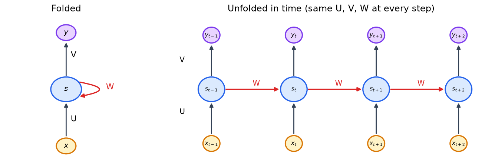
| Matrix | Role | Dimension |
|---|---|---|
| \(U\) | input → state | \(n\times k\) |
| \(W\) | state → state (recurrent) | \(n\times n\) |
| \(V\) | state → output | \(d\times n\) |
(\(\sigma\) may be tanh; \(b\in\mathbb R^n\), \(c\in\mathbb R^d\) biases.) Total parameters \(nk+n^2+dn+n+d\), independent of the sequence length.
C-Q3 (b) – Adam: why the bias correction disappears for large \(t\) [3]
Adam keeps exponential moving averages
Unrolling:
Assume gradients have (roughly) a stationary mean \(E[g_i]=E[g]\):
so \(m_t\) is a biased (towards 0) estimator; the correction divides by the factor:
Because \(0<\beta<1\), \(\beta^{t}\to0\) as \(t\to\infty\), hence
– the correction factor tends to 1 and "disappears" on its own. Examples: \(\beta_1=0.9\): \(0.9^{50}=0.005\) (after about 50 steps); \(\beta_2=0.999\): \(0.999^{3000}=0.05\) (needs a few thousand steps).
C-Q3 (c) – Gates of an LSTM; why GRU is cheaper [4]
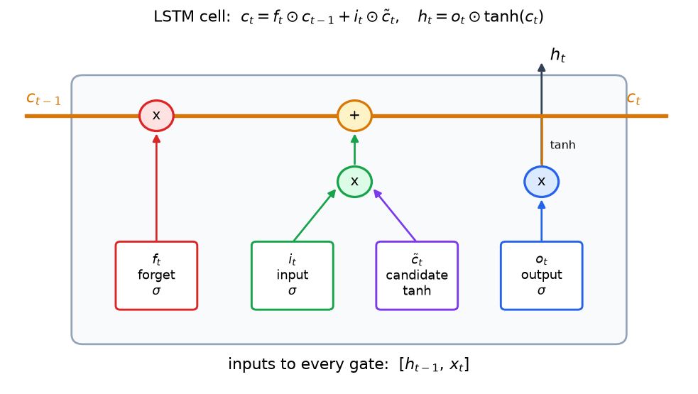
Let \(z_t=[h_{t-1},x_t]\) (concatenation), \(\sigma\)=sigmoid, \(\odot\)=element-wise product.
| Gate | Equation | Function |
|---|---|---|
| Forget gate | \(f_t=\sigma(W_fz_t+b_f)\) | how much of old cell state \(c_{t-1}\) to keep |
| Input gate | \(i_t=\sigma(W_iz_t+b_i)\) | how much of the new candidate to write |
| Candidate (cell) state | \(\tilde c_t=\tanh(W_cz_t+b_c)\) | new information proposal |
| Output gate | \(o_t=\sigma(W_oz_t+b_o)\) | how much of the cell to expose |
The additive cell-state update is why LSTM mitigates vanishing gradients: \(\partial c_t/\partial c_{t-1}=f_t\).
GRU has 2 gates and no separate cell state:
Why cheaper: GRU has 3 weight blocks (update, reset, candidate) versus LSTM's 4 (forget, input, candidate, output) → parameters \(3\,[n(n+k)+n]\) vs \(4\,[n(n+k)+n]\) ⇒ 25 % fewer parameters/mat-muls, only one state vector (\(h_t\)) instead of two (\(h_t,c_t\)), so less memory and faster training with usually comparable accuracy.
C-Q4 – Activation functions & BCE
Original question (image) – click to collapse
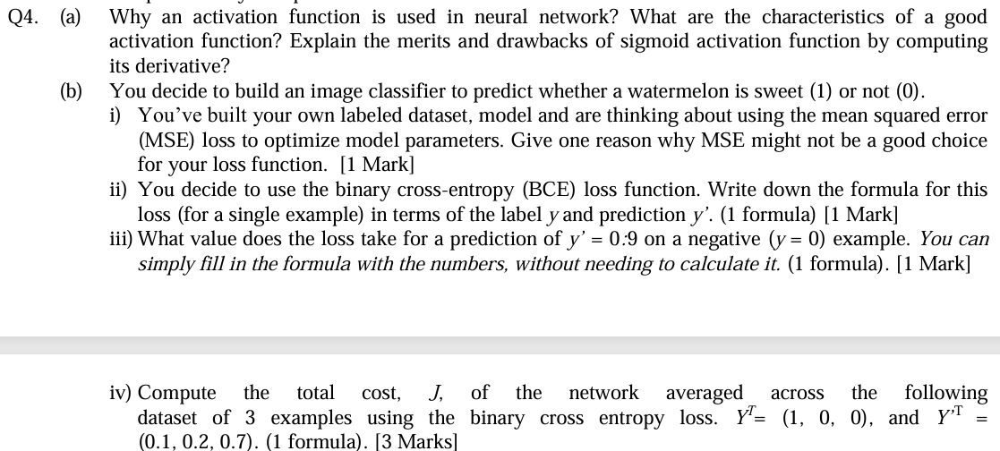
C-Q4 (a) – Activation function: need, characteristics, sigmoid
Why needed. Without a non-linearity, a stack of layers collapses to one linear map: \(W_2(W_1x)=(W_2W_1)x\). The activation introduces non-linearity so the network can approximate any function (universal approximation) and it also bounds/normalises outputs.
Characteristics of a good activation function
- Non-linear.
- Differentiable (at least almost everywhere) so back-prop works.
- Non-saturating / gradient does not vanish (derivative not ≈ 0 over a large range).
- Zero-centred (or nearly) output → faster convergence.
- Monotonic, with a derivative that is cheap to compute.
- Preferably bounded or well-scaled outputs and computationally cheap.
Sigmoid \(\sigma(z)=\dfrac1{1+e^{-z}}\) — derivative:
Maximum at \(z=0\): \(\sigma'(0)=0.25\); \(\sigma'(\pm5)\approx0.0066\); \(\sigma'\to0\) as \(\lvert z\rvert\to\infty\).
| Merits | Drawbacks |
|---|---|
| Smooth, differentiable everywhere | Saturates for large \(\lvert z\rvert\): \(\sigma'\to0\) → vanishing gradient (\(\sigma'\le0.25\) so the product over layers shrinks like \(0.25^L\)) |
| Output in (0,1): interpretable as a probability (binary output layer) | Output not zero-centred → all gradients of a layer's weights share a sign → zig-zag updates, slower convergence |
| Derivative expressed through the output, \(\sigma(1-\sigma)\) → cheap in back-prop | Uses \(\exp\), more expensive than ReLU |
| Squashes outputs; historically biologically motivated | Neurons that saturate stop learning |
C-Q4 (b) – Watermelon classifier (sweet = 1 / not = 0)
i) Why MSE may be a poor choice (one reason). With a sigmoid output \(\hat y=\sigma(z)\), the MSE gradient is \(\partial L/\partial z=2(\hat y-y)\hat y(1-\hat y)\); when the prediction is confidently wrong (\(\hat y\to0\) while \(y=1\)) the factor \(\hat y(1-\hat y)\to0\), so the gradient vanishes and learning is very slow. (The loss surface is also non-convex in the weights for classification.) BCE's gradient is simply \(\hat y-y\).
ii) Binary cross-entropy (one example)
iii) \(y'=0.9\) for a negative example (\(y=0\))
iv) Total cost for \(Y=(1,0,0)\), \(Y'=(0.1,0.2,0.7)\)
| \(i\) | \(y\) | \(y'\) | Loss |
|---|---|---|---|
| 1 | 1 | 0.1 | \(-\log0.1=2.3026\) |
| 2 | 0 | 0.2 | \(-\log0.8=0.2231\) |
| 3 | 0 | 0.7 | \(-\log0.3=1.2040\) |
| Sum | 3.7297 |
(natural logarithm used.)
C-Q5 – CNN parameters, 3-bit XOR, RNN
Original question (image) – click to collapse
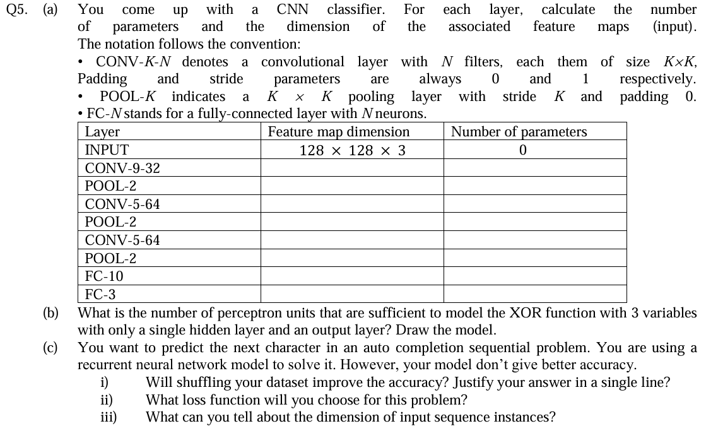
C-Q5 (a) – Feature-map dimension and parameters
Padding 0, stride 1 for CONV → \(W_2=W_1-K+1\); POOL-\(K\) uses a \(K\times K\) window with stride \(K\) → \(W_2=W_1/K\). CONV params \(=(K\cdot K\cdot D_{in}+1)N\); POOL params \(=0\); FC params \(=(n_{in}+1)N\).
| Layer | Feature-map dimension | Number of parameters |
|---|---|---|
| INPUT | 128 × 128 × 3 | 0 |
| CONV-9-32 | 120 × 120 × 32 | (9·9·3 + 1)·32 = 244·32 = 7,808 |
| POOL-2 | 60 × 60 × 32 | 0 |
| CONV-5-64 | 56 × 56 × 64 | (5·5·32 + 1)·64 = 801·64 = 51,264 |
| POOL-2 | 28 × 28 × 64 | 0 |
| CONV-5-64 | 24 × 24 × 64 | (5·5·64 + 1)·64 = 1601·64 = 102,464 |
| POOL-2 | 12 × 12 × 64 | 0 |
| FC-10 | 10 | (12·12·64 + 1)·10 = 9217·10 = 92,170 |
| FC-3 | 3 | (10 + 1)·3 = 33 |
| Total | 253,739 |
Flatten before FC-10: \(12\cdot12\cdot64=9216\).
C-Q5 (b) – XOR of 3 variables with one hidden layer
3-bit XOR (parity) \(=1\) when an odd number of inputs are 1; it is not linearly separable, so a hidden layer is required.
Construction. Hidden unit \(h_i\) fires when at least \(i\) inputs are on:
Output: \(y=\mathbb 1\big[h_1-h_2+h_3-0.5\ge0\big]\) (weights \(+1,-1,+1\), bias \(-0.5\)).
| \(\sum x_i\) | \(h_1h_2h_3\) | \(h_1-h_2+h_3\) | \(y\) |
|---|---|---|---|
| 0 | 0 0 0 | 0 | 0 |
| 1 | 1 0 0 | 1 | 1 |
| 2 | 1 1 0 | 0 | 0 |
| 3 | 1 1 1 | 1 | 1 |
Answer: 3 hidden perceptrons + 1 output perceptron = 4 perceptron units (in general \(n\) hidden units for \(n\)-bit parity).
C-Q5 (c) – Next-character prediction with an RNN
i) Will shuffling improve accuracy? No. Order carries the information in a sequence; shuffling the characters destroys the dependencies the RNN must learn (shuffling whole independent sequences between epochs is harmless but does not fix accuracy).
ii) Loss: categorical cross-entropy over a softmax output (multi-class classification over the character vocabulary \(V\)):
iii) Dimension of the input sequence. Each character is a one-hot vector of size \(\lvert V\rvert\) (or a fixed-size embedding), so one instance has shape \(T\times\lvert V\rvert\) (\(T\) = sequence length). The input size \(k=\lvert V\rvert\) is the same at every time step; sequences can have different lengths (padded/truncated per batch); the output at each step is also \(\lvert V\rvert\)-dimensional. A batch is \(B\times T\times\lvert V\rvert\).
C-Q6 – Convolution, guided backprop, regularisation
Original question (image) – click to collapse
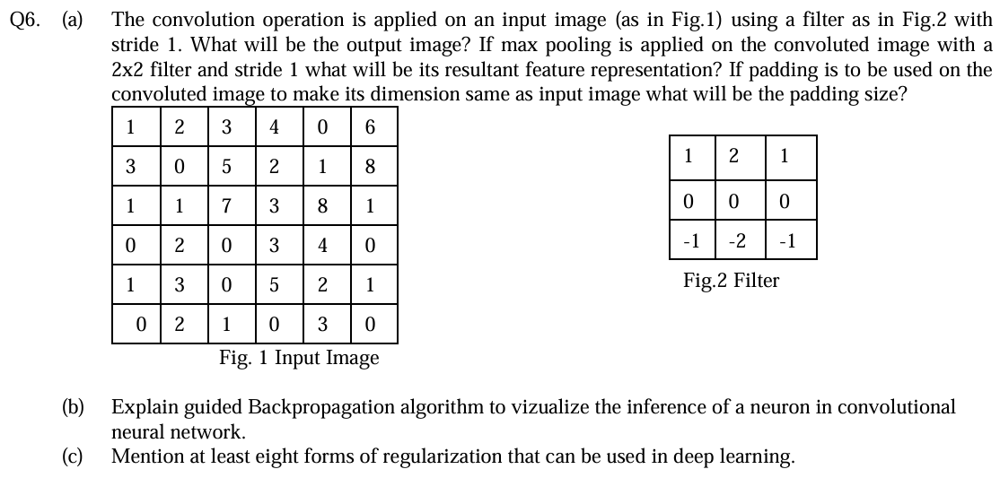
C-Q6 (a) – Convolution, max-pooling and padding
Input (6×6) and filter (3×3):
Output size \(=\dfrac{6-3}{1}+1=4\) → 4×4. (Cross-correlation, i.e. no kernel flip – the usual CNN convention. A true convolution flips the filter 180°, which negates every value.)
Because the middle row of \(F\) is zero, each output is a difference of two weighted row-sums. Define for every image row \(r\): \(T_r[c]=r[c]+2r[c+1]+r[c+2]\) (\(c=1..4\)), then output row \(i\) \(=T_i-T_{i+2}\).
| Row | \(T\) |
|---|---|
| R1 | [8, 12, 11, 10] |
| R2 | [8, 12, 10, 12] |
| R3 | [10, 18, 21, 20] |
| R4 | [4, 5, 10, 11] |
| R5 | [7, 8, 12, 10] |
| R6 | [5, 4, 4, 6] |
Output row 1 \(=\) R1 − R3 \(=\) [8−10, 12−18, 11−21, 10−20]; row 2 \(=\) R2 − R4; row 3 \(=\) R3 − R5; row 4 \(=\) R4 − R6:
Spot check of the first entry: \((1\cdot1+2\cdot2+1\cdot3)+(-1\cdot1-2\cdot1-1\cdot7)=8-10=-2\) ✓.
Max-pooling (2×2, stride 1) → \((4-2)/1+1=3\) → 3×3:
e.g. \(\max(-2,-6,4,7)=7\), \(\max(-6,-10,7,0)=7\), \(\max(-10,-10,0,1)=1\), \(\max(4,7,3,10)=10\), …
Padding to bring the convolved image back to the input size. Convolved image is 4×4, the input is 6×6: \(4+2P=6\Rightarrow\boxed{P=1}\) (one row/column of zeros on every side). Equivalently, for the original convolution to keep size: \((6-3+2P)/1+1=6\Rightarrow P=1\) ("same" padding, \(P=(F-1)/2\)).
Note. The earlier Word answer file listed the convolution result as
[-2 7 1 -1; 4 7 -2 1; 6 13 11 9; -3 4 8 4]and the pooled result[7 7 1; 13 13 11; 13 13 11]. The row-subtraction in it was wrong (e.g. R1−R3 = 8−10 = −2, 12−18 = −6, not 7). The values above were recomputed in code and are correct.
C-Q6 (b) – Guided back-propagation
Purpose: visualise which input pattern (pixels) a chosen neuron in a CNN responds to. It combines normal back-propagation with the "deconvnet" rule at every ReLU.
Steps
- Forward pass the image and store the activations up to the layer of the target neuron.
- Set the gradient/signal at the target neuron to 1 (zero for every other unit in the layer).
- Back-propagate to the input. At each ReLU apply a double mask:
- The result in input space shows the pixels that positively excite the neuron.
| Method | Rule at ReLU |
|---|---|
| Normal back-prop | \(R^l=\mathbb 1[f^l>0]\,R^{l+1}\) |
| Deconvnet | \(R^l=\mathbb 1[R^{l+1}>0]\,R^{l+1}\) |
| Guided back-prop | \(R^l=\mathbb 1[f^l>0]\,\mathbb 1[R^{l+1}>0]\,R^{l+1}\) |
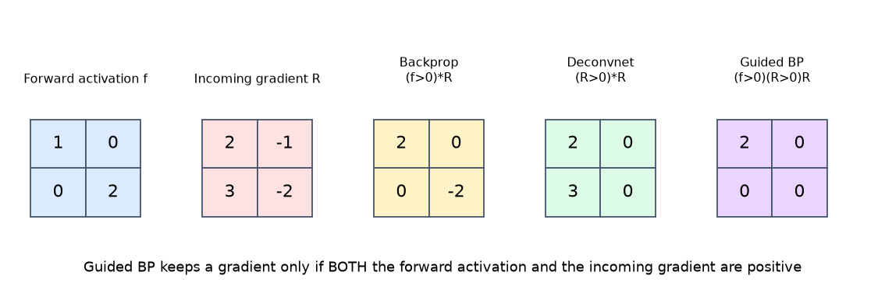
Why it works: removing negative gradients throws away evidence that suppresses the neuron, giving sharp, clean pictures of the edges/parts the neuron detects. No re-training is needed.
C-Q6 (c) – At least eight forms of regularisation
| # | Technique | Idea / formula |
|---|---|---|
| 1 | L2 (weight decay / ridge) | \(L'=L+\lambda\lVert w\rVert_2^2\); shrinks weights, update \(w\leftarrow(1-2\eta\lambda)w-\eta\nabla L\) |
| 2 | L1 (lasso) | \(L'=L+\lambda\lVert w\rVert_1\); produces sparse weights |
| 3 | Elastic net | \(L+\lambda_1\lVert w\rVert_1+\lambda_2\lVert w\rVert_2^2\) |
| 4 | Dropout | randomly deactivate units/weights with probability \(p\) during training |
| 5 | Early stopping | stop when the validation loss starts to rise |
| 6 | Data augmentation | flips, crops, rotations, colour jitter, noise |
| 7 | Batch normalisation | mini-batch noise in mean/variance gives a mild regularising effect |
| 8 | Noise injection | add noise to inputs, weights or labels |
| 9 | Label smoothing | soft targets \(y=(1-\varepsilon)\,\text{one-hot}+\varepsilon/C\) |
| 10 | Parameter sharing / tying | as in CNNs and RNNs |
| 11 | Ensembling / bagging | average several models |
| 12 | Max-norm constraint & gradient clipping | \(\lVert w\rVert\le c\) |
Quick formula sheet
| Topic | Formula |
|---|---|
| Conv output size | \(W_2=\dfrac{W_1-F+2P}{S}+1\) |
| Conv parameters | \(K\,(F\cdot F\cdot D+1)\) |
| Pooling output size | \(\dfrac{W_1-F}{S}+1\) (params = 0) |
| FC parameters | \((n_{in}+1)\,n_{out}\) |
| BatchNorm parameters | \(2C\) trainable (+\(2C\) running stats) |
| Sigmoid and derivative | \(\sigma(z)=\dfrac1{1+e^{-z}},\ \sigma'=\sigma(1-\sigma)\le0.25\) |
| Perceptron | \(y=\mathbb 1[w\cdot x+\beta\ge0]\); OR: \((1,1,-0.5)\), AND: \((1,1,-1.5)\) |
| Output-layer delta (sigmoid + MSE) | \(\delta_5=(y_5-t)\,y_5(1-y_5)\) |
| Weight update | \(w\leftarrow w-\eta\,\delta\cdot a_{in}\) |
| Bias–variance | \(\mathrm{Err}=\mathrm{Bias}^2+\mathrm{Var}+\sigma^2\) |
| Momentum | \(v_t=\gamma v_{t-1}+\eta g_t,\ w\leftarrow w-v_t\) |
| NAG | \(v_t=\gamma v_{t-1}+\eta\nabla L(w-\gamma v_{t-1})\) |
| Adagrad | \(G_t=G_{t-1}+g_t^2,\ w\leftarrow w-\eta g_t/\sqrt{G_t+\epsilon}\) |
| RMSProp | \(E_t=\rho E_{t-1}+(1-\rho)g_t^2\) |
| Adam | \(\hat m=\dfrac{m}{1-\beta_1^t},\ \hat v=\dfrac{v}{1-\beta_2^t},\ w\leftarrow w-\eta\dfrac{\hat m}{\sqrt{\hat v}+\epsilon}\) |
| BCE | \(-[y\log y'+(1-y)\log(1-y')]\) |
| RNN | \(s_i=\sigma(Ux_i+Ws_{i-1}+b),\ y_i=\mathrm{softmax}(Vs_i+c)\) |
| LSTM | \(c_t=f_t\odot c_{t-1}+i_t\odot\tilde c_t,\ h_t=o_t\odot\tanh c_t\) |
| ResNet block | \(y=F(x,\{W_i\})+x\) |
| Guided BP at ReLU | \(R^l=\mathbb 1[f^l>0]\,\mathbb 1[R^{l+1}>0]\,R^{l+1}\) |
| Model sizes | LeNet-5 ≈ 61 K, AlexNet ≈ 61 M, VGG16 ≈ 138 M, ResNet50 ≈ 25.6 M |